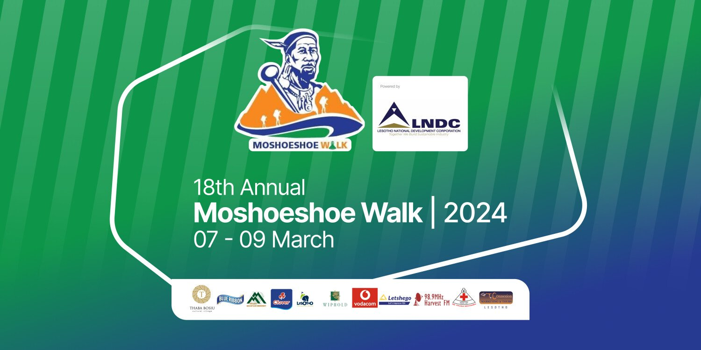

Experience the culture and heritage of Lesotho.
The Moshoeshoe Heritage Walk celebrates the legacy of King Moshoeshoe I, the founder of the Basotho nation. Visitors gather to explore historic routes around Thaba Bosiu while enjoying Basotho culture, music and food.
